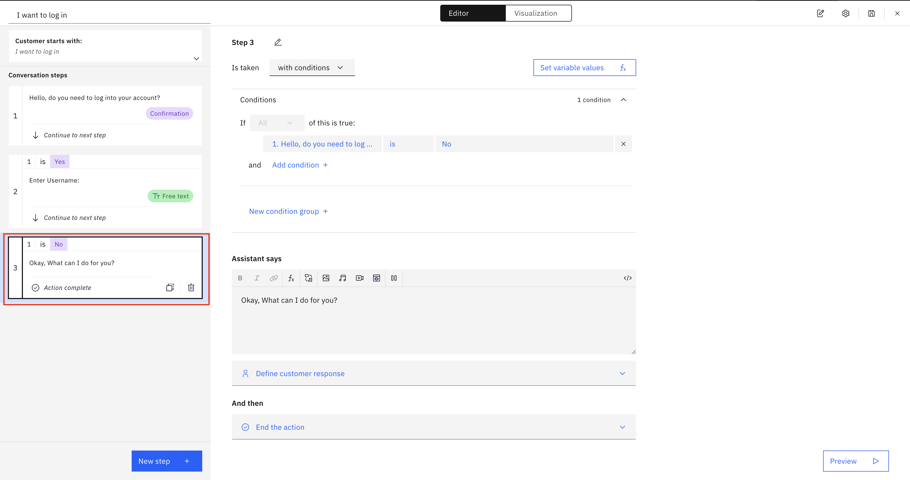

watsonx Assistant Essentials
Overview
watsonx Assistant is designed to build conversational interfaces into applications, devices, or channels. It leverages natural language understanding and machine learning to enable developers to create more engaging and effective chatbots and virtual assistants.
Features
Actions
Actions enable the chatbot to perform operational tasks such as making API calls, querying databases, or executing other backend processes. These are essential for dynamically interacting with external data and systems to inform responses.
Session Variables
Session Variables store data about the user's current session, helping to maintain context and continuity across multi-turn dialogues. They ensure that the chatbot can provide coherent and contextually relevant interactions.
Intents
Intents categorize the user's goals from their inputs, guiding the chatbot in understanding and responding appropriately to user requests. This component is crucial for directing the chatbot's retrieval and response strategies.
Entities
Entities extract and utilize specific pieces of information from user inputs, such as dates, locations, or names. They enhance the precision and relevance of the chatbot's data retrieval, which is vital for crafting detailed responses.
Dialogues
Dialogues manage the flow of conversation, controlling how the chatbot responds to inputs based on the recognized intents and entities, and deciding when to gather more information or conclude an interaction.
Skills
Skills refer to the chatbot's capabilities that are developed to handle different aspects of interactions, such as managing dialogues or integrating actions. They allow for modular enhancement and specialization of the chatbot.
Integrations
Integrations connect the chatbot with external systems and platforms, expanding its functionality and enabling access to additional data sources and services. This component is key to extending the chatbot's reach and utility.
Analytics
Analytics monitor and analyze how users interact with the chatbot, providing insights into usage patterns, effectiveness of responses, and areas for improvement. This feedback is essential for optimizing the chatbot's performance and user satisfaction.
Resources
-
Intermediate Skill: Video URL in RAG Scenario
-
Intermediate Skill: Connecting to Database
Assistant Walkthrough
This is a walk-through tutorial on creating custom actions, utilizing session variables and previewing the assistant.
Step 1: Login
Navigate to IBM Cloud and log in to your account. Go to your watsonx Assistant instance and click the Launch watsonx Assistant button.

Now let's create an Assistant!
Step 2: Create Assistant
Creating an assistant for the first time
Once you have launced your watsonx Assistant instance, you will be prompted by the following screen.
Give your assistant a name and choose your preferred language. Then, click Next in the top right corner.
On the next page, select Web from the Where do you plan on deploying your assistant drop down menu. Then, in the Tell us about yourself section, fill out some info to help the assistant learn more about who is building this assistant and why it is being built so that some settings can be pre-configured. Here's a filled out example:

Click Next in the top right corner again.
On the next page, you can customize some aspects of your assistant. You can change the name of the assistant, choose a dark or light theme, and change the color.
Once you are done customizing your assistant, click Next in the top right corner.
On this last page, you can preview what the base assistant looks like. There are options to copy a link to the assistant that you can share with others and to change the background of the assistant's home page to emulate a website. You will be able to view this page later on as well.
Once you are done previewing the assistant, click Finish in the top right corner to finish creating your assistant.
Creating an additional assistant
You will then need to create a new assistant so you will press the 'Create New +' selection located at the top. This is highlighted in the image below with a red indicator:

Once you click the 'Create New +' selection, you will be greeted with the below pop-up window in which the application will prompt you for an Assistant name, description, as well as the desired Assistant language.

Below shows a filled out screen:

Once selecting the blue "Create Assistant" button on the previous screen, you should see a Success indicator at the top right portion of your screen.

Now it is time to create your first Action!
Step 3: Create Action
To create an action you will need to select the chat icon on the left-most part of the screen. This will take you to the general Actions page shown below where you can select the blue 'Create Action' button:

Once the button is selected you are able to start building an action from scratch.

The page below is where you are able to name your new action. This name will be the prompt that will allow the bot to understand that it needs to invoke this specific action.

Once named, you can go ahead and start creating the steps of your custom action. For this breif demonstration we will be using a generic "Log-In" script.
This will start by having the assistant respond with an initial phrase indicating that the action has been invoked. In this case we will choose: "Hello, do you need to log into your account?" as shown below:

For this step, we want the user to have a response of Yes/No. watsonx Assistant makes this easy for us by prepopulating that User Response for us. Below shows where this can be selected:

Now let's create the next Step in our custom Action.
We are going to set this step to be conditional on the response of the initial step. This can be set by selecting the "Is taken with conditions" dropdown. This ensures that the current step will ONLY be taken CONDITIONALLY. Please set up the step as shown below:
Once the condition is set, we are going to enter text for the assistant to say. In this case we are prompting the user to enter their username to ensure smooth log in.
We will now select the User Response as free text as shown below:
Now we are going to create the other condition for the first step. This would be if the User selected 'No' when initially prompted.
Once this step is set up we are going to ensure that the "And Then" section is set to 'End the Action'.

Moving on to the next step, we are going to finish up the username/password entering.
As we did in the second step we will prompt the user to enter their information, however, this time we will do it conditionally as we only want the users password if their entered their username. This is shown in the condition section, highlighted in the image below:
- Remember this is a brief action created without database integration. This is just an example. Please to not enter your true username and password in this example.
We are now ready to validate the users inputs by calling those step entries in a prompt. This is shown below. You can call the step entries by selecting the function option in the 'Assistant says' section of this screen.
- Remember this is a brief action created without database integration. This is just an example. Please to not enter your true username and password in this example.
In this step we are going to again define the user response as Yes/No.

Created conditionally on the previous response, we will begin an action for Logging in. This is a static example without an integrations or external API calls. Therefore we can create a static response from the Assistant for letting the user know that they are being logged in. This is a basic step shown below:
We will now create a step that allows the user to know that they have been logged in and the action can now end. This can be done by selecting the 'End the action' option in the "And then" section.

We will now create another conditional step, based on the response from step 5.
This step will not have a response from the assistant and instead will send to user back to the previous steps for the user to more accurately enter their information. This can be done in the "And then" section in the page as shown below:
There you have it! You've created your first action.
Step 4: Session Variables
Moving on to session variables.
These Variables are important especially when dealing with user inputs such as how we did in this brief example. To navigate to this page you will select the Variables drop down and then select the Created by you option on the left side of the screen under Variables.
Then select the blue New Variable button on the top right portion of the screen.

Once you've selected the blue "New Variable" button, you are prompted with the Session Variable creation screen.
In this example we have two variables:
- Username
- Password
We will create those two variables as shown below:

We must ensure that the Type of variable matches the Data type that we assigned in the Action. Free Text.
For the password session variable, we recognize that this is a sensitive variable and maybe we wouldn't want that to be stored anywhere...
Therefore, we select the Protect data stored in this variable.

To set these user entries to the session variables that we just created, we must set the variable values in the Action. This can be done in any step, however, to ensure that we retain the correct user information, we will do this process in Step 6 of our action, where verification of the entries has already taken place.
This can be done as shown below in the Variable values section of the action step:

Step 5: Testing
Let's test what we created!
Open the preview tab at the bottom right corner of the screen.
Type "I want to log in" or anything that will trigger your action to be invoked.

Once the selection has been made you can complete the flow that we created. Verifying the information entered and doing more testing.

Once the flow is completed, You can check the collected session variables by selecting the function tab on the side and opening the Session variables tab. With this you can see how the username was collected and shared. Since we selected the privacy option on the password session variable, that variable was collected and hidden.
Now we've created an action in watsonx assistant! Try some more out and do your own testing.
Cheers!